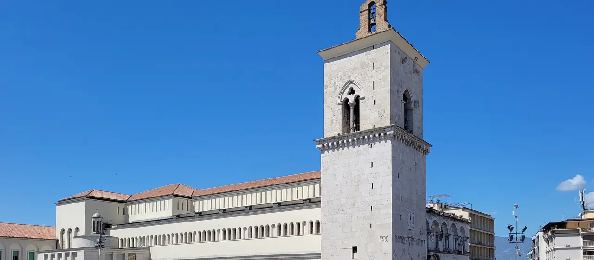

01 / 09
Dal VII secolo
Piazza Orsini e il Duomo
La testa del Serpentone
Qui comincia la salita. Il Duomo, Santa Maria de Episcopio, sorge dove la città romana aveva il suo Campidoglio: fondato all’inizio del VII secolo e ingrandito al tempo dei duchi longobardi, fu quasi del tutto distrutto dai bombardamenti del 1943 e poi ricostruito. Della cattedrale antica restano la facciata e il campanile del Duecento.
Accanto, in Piazza Orsini, la fontana dedicata a Vincenzo Maria Orsini, per quasi quarant’anni arcivescovo di Benevento e poi papa con il nome di Benedetto XIII.
Lo sapevi? Il 13 febbraio 1799 in questa piazza i francesi innalzarono l’Albero della Libertà: lo ricorda ancora una lapide sul palazzo arcivescovile.